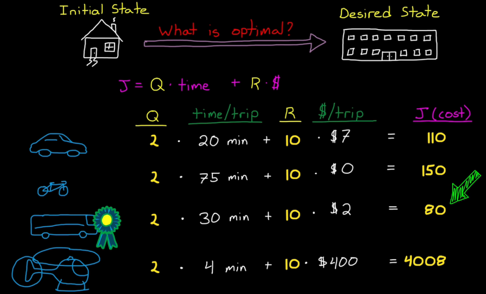
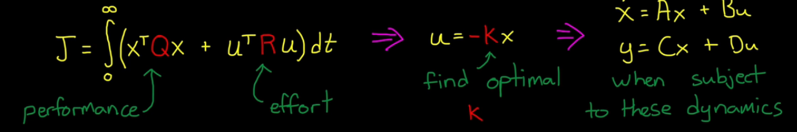

Dynamic system can be written in differential equations.
How the system is changing = f(current state)
Xd = f(X), actually defines stability for linear systems
Xd = f(X,u), where u = inputs, defines how a system changes
There are also control techniques that are built on state space models
(e.g. Kalman filter, LQR, robust, Model Predictive Control) Xd(t) = [A]X(t) + [B]u(t) y(t) = [C]X(t) + [D]u(t)
What are the state variables?
minimum set of variables that fully describe the system
For the simple string mass example, Initial Conditions:
Is the mass currently moving? we know this from [velocity]
How hard is the spring pulling on the mass? spring force = k*[position]
So we have 2 State Variables: position, velocity
Verify numbers of state variables with energy storage (Dr. Hill's explanation)
A dynamic system "stores" energy
(e.g. spring: potential energy, mass: kinetic energy)
(since damper does not store energy, adding damper: b is still a 2nd order system)
Why not two different states? Why position and velocity?
State variables are the coordinates within the state space.
So it can be changed!
We can describe the same state with any linearly-independant variables.
We do this often, for example diagonalizing the [A] matrix into so-called "modal form"
Feedback Control using State Space Equations:
Pole Placement/Full State Feedback method
A controller has to modify [A] to change dynamics
eigenvalues(A) = poles of the system, where the location dictates stability
KEY to pole placement method:
generate the required close-loop stability, by moving the poles
Xd = [A]X -eigenvector transform-> Zd = [A_bar]Z,
(e.g. [A] = [[0 1],[2 -1]], [A_bar] = [[-2 0],[0 1]])
[A_bar] is diagonal matrix!, So Z1d = -2Z1 Z2d = Z2
it becomes functions of its "own" state, decoupled!
And the solution becomes: Zn = C*exp(eigenvalue*t)
Review the block diagram of pole placement
u = r*kr - k*x
plug u into the state equation, we get Xd = [A]x + [B](r*kr-k*x) Xd = [A-B*k]X + [B]*r*kr
[A-B*k] is the closed-loop [A] matrix,
by design the k, we can move the eigenvalues of the closed-loop A matrix!
MATLAB example:
A = [0 1; 2 -1];
B = [1; 0];
C = [1 0];
D = 0
sys = ss(A, B, C, D)
E = eig(A), %shows E = 1,-2
% Desired closed loop eigenvalues
P = [-2 -1];
% Solve for K using pole placement
K = place(A, B, P);
% Check for closed loop eigenvalues
Acl = A-B*K;
Ecl = eig(Acl) %shows Ecl = -1, -2
% Create closed loop system & compare
syscl = ss(Acl, B, C, D)
step(sys,syscl)
The step response of sys is unstable as predicted
The step response of syscl is stable
However, it's not perfect, the steady state output is only 0.5
This is where the reference scaling term: kr comes in
If the steady state of step responce is only 0.5,
Why not just double the input by setting kr = 1/(steady state value)?
Pole placement is fancy root locus:
we have gain matrix that gives us the ability to move the poles anywhere in the complex plane.
A 2-state pole placement is similar to PD control:
Where should we place the eigenvalues?
If we have a high-order system, keep two poles closer to the imaginary axis than others, so that it behaves like a 2nd order system.
If we try to move a bunch of eigenvalues really far left to get the fast response, more gain needed and more acuator effort.
Full-state feedback is a misnomer:
We can't feed back every state of a real system.
(e.g. flexible structure means additional states, but we may choose to ignore those states in our model and develop feedback controller assuming a rigid system.
KEY! Feed back critical states to the design, so the controller will still work on the real hardware)
Controlability and Observability
From the higher control design level, actuators impart control forces and enegy to the system; sensors measure the states of the system.
Controller design comes down to figuring out how to use the sensor data along with a reference signal or some kind of command to generate the correct actuator commands.
However, controller design is bound to fail if your system doesn’t have the appropriate actuators that can affect the right parts of the system, or if you don’t have the appropriate sensors in place that can measure the right states.
Without both of those, you won’t be able to adequately influence the system, it won’t be controllable, or you won’t know how the system is changing; it won’t be observable.
In this way, controllability and observability are conditions of how the system works with the actuators and sensors, and it’s not tied to a specific control technique like PID or pole placement.
If it's uncontrolabil, change the system or acuator; If it's unobservable, change system or sensor.
Definition
Controlability: there exist control signals which allow the system to "reach" any state in a finite amount of time. (note: need not to maintain the state)
Observability: all "critical" states can be known from the system outputs. (note: impractical to know every state)
Car Example Xd = [A][px; py; pxd; pyd; yaw; yawd] + [B][steearing pedals] Y = [C][px; py; pxd; pyd; yaw; yawd] + [D][steering pedals
Remove all sensors info. by closing our eyes, it means [C] = 0, but he can still control the car with [B] being not null.
Remove the steering and padals (imagine the car drives on ice), [B] = 0. The driver can't affect the state of the system, but can still observe the state (how crazy the car is moving!)
What does it mean to observe (know) a state
We can mearsure it, Or we can estimate it using available info. (e.g. velocity is d(position)/dt; vice versa.)
Estimating states can be highly sensitve to modeling and measurement errors
Balance the tradeoff: Which states should be measured? and which states should we estimate?
The answer can be found analytically
Consider a Flexible Cantilevered Beam
We have a package of accelerator (sense position) and spring (acutator to damp the bending).
So where should we place it?
The bending motion of a flexible cantilevered bean is a combination of a number of distinct bending modes.
Consider observability, we should not place the package on the "node" of any bending modes (since the node point doesn't move)
Consider Controlability, we should place the package away from the wall, larger torque can be generated, lighter acuator
Linear Quadratic Regulator
LQR is a type of "optimal control" based on the state space.
Has same structure as Pole Placement; Full state feedback. But, how we choose K is different
LQR doesn't choose pole location, it find the optimal K by choosing close-looped characteristic.
What is Optimal?
Build a cost function, by setting the weight of Q and R based on our preference.
The optimal solution is the choice with min. cost.
This is the same reasoning with control systems.
Balance of "performance" and "actuator effort ($$, energy it takes)"

How LQR finds the optimal gain?
Build cost function; Return Gain K.

LQR Cost Function J = integral(XT*Q*X+uT*R*u)dt, t = 0-inf.
Penalize bad performance by adjusting Q; Penalize actuator effort by adjusting R
the integral of XT*Q*X calculates the area sqaure of the response of initial state to 0 state.
Smaller area square means better performance.
Q is a matrix of nxn. n is the length of state vector.
[Q] is diagonal. If one of the state performance is crucial, penalize it by increasing the corresponding Qn.
[R] is similar. If one of the actuator is expensive, penalize it by increasing the corresponding Rn.
(e.g. thruster of satellite control)
Re-write the cost function: J = [XT uT][[Q 0],[0 R]][X; u]
Anotehr form of cost function: J = integral(XT*Q*X+uT*R*u+2XT*N*u)dt, t = 0-inf. J = [XT uT][[Q N],[NT R]][X; u]
N penalizes the cross product of X and u
How to Solve this Opt. Problem?
1. Develop a linear model Xd = [A]X+[B]u Y = [C]X+[D]u
2. Adjust Q and R
3. Find the optimal gain set K
MATLAB: K = lqr(A,B,Q,R)
4. Simulate the response, (return 2. step to return Q and R if necess.)
With LQR, we don't place poles. We tune Q and R.
How do we tune them?
Start with Identity matrix, tweak based on intuition and knowledge of the system.
UFO in No Gravity Example
The code first build the closed-loop system, using LQR gain Matrix.
Then simulate the closed-loop system response to the initial condition.
It counts the time and fuel usage, where fuel usage is proportional to the integral of acceleration. ufo_rotate.m